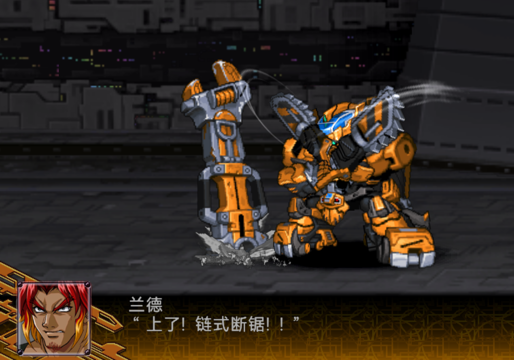

scroll

冷启动后正常按键进入。自然文本，未注入测试句或字库。点击图片查看原图。
ISO SHA-256: d45b8e27d270f7ebd2317b63058186ecc04528f2f14a79afa3c8269454fe5a38

ISO SHA-256: a5d5ec18d34968750b6d3e13f093e5cd129a012a00683058da632bb4735f2a00


ISO SHA-256: 0175bffd0a3312db930f45d5058e56fc60058362c6941a26fb87ad8a91496ae9
